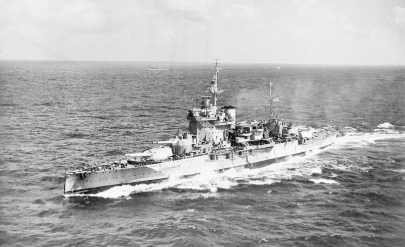
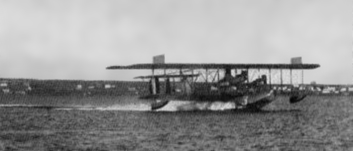
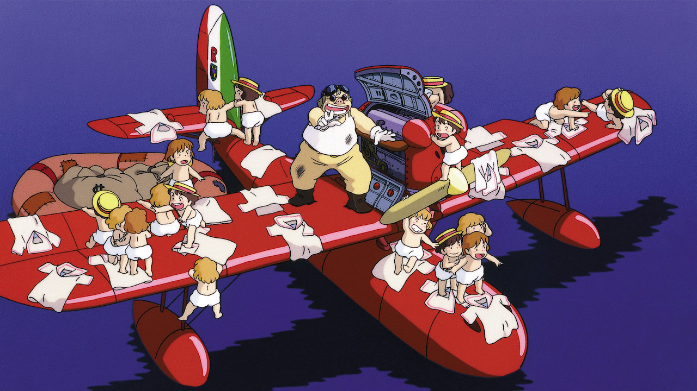
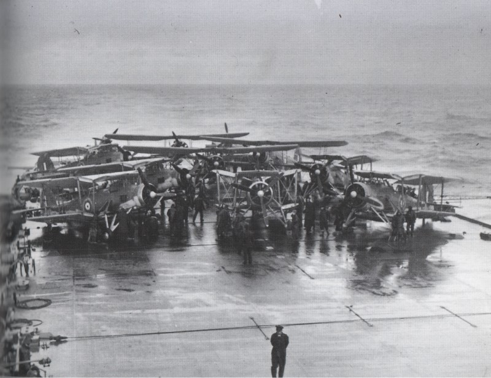
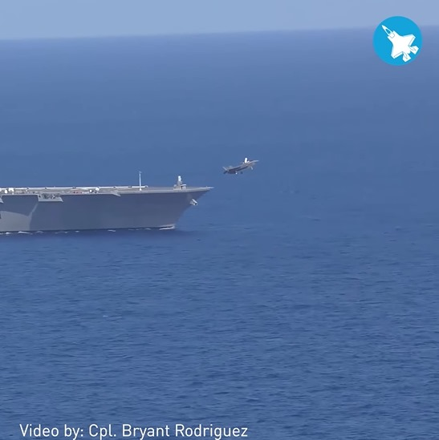
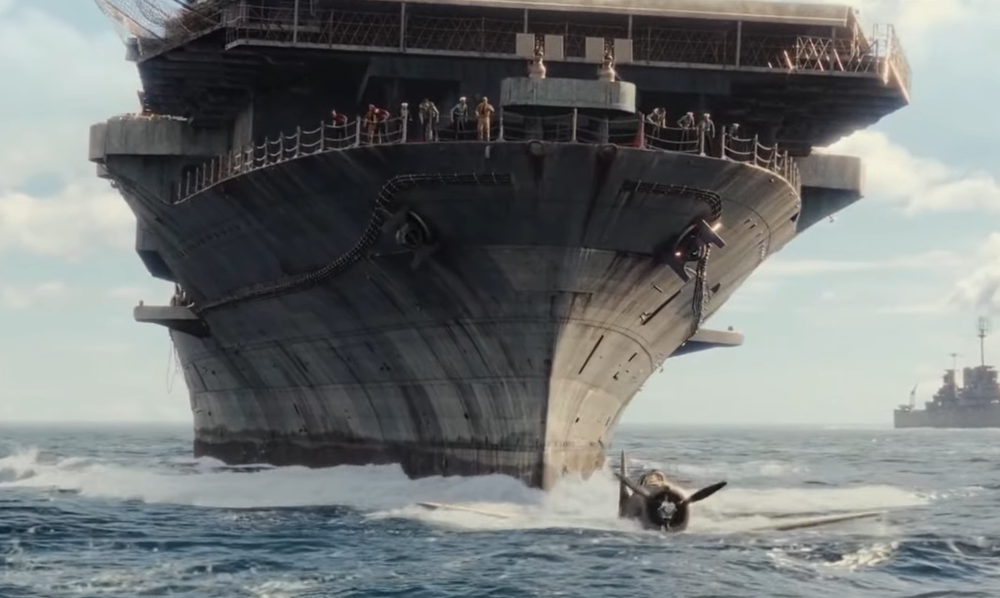

항공모함 관련 잡담 (12/23)
게시: 2021-12-23T06:30:48+09:00
<대체 항공모함이 왜 필요한 거야? - 1920년대 이야기> 항공모함의 개념이 도입되던 1920년대, 바다 위에서 굳이 비행기를 날려서 얻을 이익이 무엇인가에 대해서 해군은 뚜렷한 청사진이 있었음. 사정거리가 수평선 너머까지인 25km 이상으로 확장된 전함들의 눈 역할을 한다는 것. 아무리 사거리가 길고 명중률 좋은 주포를 가진 전함이라도, 수평선 너머에 있기 때문에 보이지 않는 적을 타격할 방법은 없음. 그러나 더 높이 올라가면, 즉 비행기를 띄워서 높은 곳에서 아군 사격의 탄착점을 볼 수 있다면 수평선 너머의 적을 정확히 타격하는 것이 가능. 전함을 뜻하는 battleship이라는 단어는 사실 전함의 본질을 정확히 표현하지는 못하고, 오히려 프랑스어 cuirassé (원래는 le navire cuirassé)가 정확히 표현. 즉 적 포탄을 견딜 두꺼운 장갑을 입은 군함이라는 뜻. 전함은 적을 때리기 위한 주포도 중요하지만 적탄을 막을 장갑이 사실 더 중요한데, 적이 나의 사정거리 안에 들어왔다는 것은 나도 적의 사정거리 안에 들어갔다는 것을 의미하기 때문. 그런데 항공기로 인해서, 적은 나를 보지 못하지만 나는 적을 볼 수 있다면 일방적인 폭행이 가능. 이건 해군 제독들에게 꿈의 시나리오. 그런데 그런 관측용 항공기 띄우는데 굳이 항공모함이 필요할까? 당시 이미 해면에서 뜨고 내릴 수 있는 수상기(flying boat, sea plane)도 있었음. 그냥 그런 수상기 1대를 전함의 넓은 갑판에 싣고 다니다가 필요시 기중기로 바다에 내려놓고 이륙시키면 충분. 하지만 적도 함재기를 가지고 있다면 다시 서로가 서로를 볼 수 있게 되므로 아군만 유리한 것은 아님. 어떻게 하면 적이 나를 볼 수 없게 만들까? 간단. 적기를 격추해버리면 됨. WW1 때 이미 기관총으로 적기를 격추하는 전투기들이 활약헀으니 전혀 무리가 없음. 따라서 적함대와 포격전을 벌일 때는 관측기 1대만 띄울 것이 아니라 전투기까지 함께 띄워서 적 관측기를 격추시켜 적의 눈을 멀게 만들어야 함. 그려려면 본격적인 항공모함이 필요하게 되었음. 사진1은 HMS Warspite (3만3천톤, 24노트). 1913년에 진수되어 유틀란트 해전을 비롯한 WW1과 WW2에 모두 참전. WW2 당시 약 25km에서 이탈리아 해군 전함 쥴리오 체사레를 명중시킨 것이 인류 해전 사상 최장거리 명중탄. 사진2은 Curtiss NC 수상기 "NC-3". 1919년의 사진. 사진3는 유명한 '붉은 돼지'. 붉은 돼지에 나오는 항공기들은 모두 수상기.
  
<항모가 왜 빨라야 하는 거야?> 1920~30년대 당시 아무도 항공모함이 전함을 대체하여 주축 군함(capital ship)이 될 것이라고는 생각하지 못했고 대체 이 새로운 물건을 어떻게 써먹어야 하는지에 대해 감을 못 잡고 있던 시절, 온갖 시행착오와 뻘짓을 해가며 항공모함 전술의 모든 기초를 쌓은 것은 누가 뭐래도 역시 로열 네이비. 로열 네이비가 몇년간 바다에서 활발하게 항모 운용을 해보니 그냥 머릿 속으로 상상하던 것과는 여러가지가 달랐는데, 그로부터 도출된 결과는 대략 아래. 1) 항모는 최소한 전함보다는 빨라야 : 이는 단순히 적 전함으로부터 도망치는 것이 목적이 아님. 당시 항모는 아직 유압식 캐터펄트조차 제대로 갖추지 않았을 때인데, 당시의 복엽기 함재기들은 굳이 캐터펄트가 없어도 짧은 비행갑판에서 잘 이륙했음. 그러나 연료와 폭탄을 잔뜩 싣고 이륙하자니 함재기 엔진만으로는 초기 이함 속도를 내기가 쉽지 않았음. 그래서 일단 항모가 전속력으로 달려서 충분히 맞바람을 받아야 했고, 또 바다 위로 부는 자연풍을 활용하기 위해 바람이 불어오는 방향으로 달려야 했음. 함재기 이륙에 필요한 속도가 60노트라면 이걸 짧은 비행갑판에서 활주하면서 다 낼 수는 없지만, 항모가 20노트 속력으로 달려주면 비행기는 60-20=40노트만 내도 이륙이 가능하고, 만약 맞바람이 20노트로 불어오고 있다면 40-20=20노트의 속도만 내도 충분. (만약 항모가 60노트의 속도를 낼 수 있다면 이론상으로는 복엽기 정도는 엔진을 끈 상태에서도 이함이 가능.) 그러니 항모는 일단 빨라야 함. 항모가 빠를 수록 함재기는 더 많은 무장과 연료를 싣고 이함이 가능. 그런데, 전함, 순양함 등이 포함된 함대 전체가 일제히 선회하는 것은 꽤 어려운 일이고 자칫하다가는 상호 충돌 사고가 일어나기도 하는 위험한 일임. 그런 함대 기동을 항모에서 함재기가 이착함 할 때마다 할 수는 없음. 따라서 함재기를 발진시킬 때는 항모만 함대에서 벗어나 바람 방향으로 선회한 뒤 함재기를 이함시키고 다시 함대 안으로 합류해야 함. 그런데 그렇게 전체 함대의 기동에 폐를 끼치지 않으면서 함대 안팎을 벗어났다 재합류했다 하려면 최소한 전함보다는 빨라야 함. 2) 함재기들을 연속적으로 재빨리 출격시키는 것이 중요 : 비교적 바다가 거친 편인 북해에서 항모 운용을 해야 하는 로열 네이비 특성상, 로열 네이비는 평소 함재기를 격납고에 보관하고 있다가 이륙 직전에 꺼내는 것을 기본으로 하려 했음. 그리고 전체 비행갑판을 다 활용하기 위해서라도, 1대씩 엘리베이터로 꺼내어 비행갑판 고물쪽 맨 끝에서부터 날려보낸 뒤 그 다음 함재기를 꺼내는 것도 고려. 그렇게 안전하게 한대씩 충분한 여유를 가지고 출격시켜도 되지 않을까 싶었은데, 막상 연습을 해보니 그렇지가 않았음. 함재기는 (아무리 맞바람을 받고 이륙해도) 활주거리가 짧다는 한계 때문에 연료를 가득 채우고 뜨는 것이 부담스러웠는데, 반대로 함재기는 조금이라도 더 오래 체공해야 의미가 있음. 그러니까 연료를 아껴야 했음. 그런데, 전투기든 폭격기든 1대씩 이륙한 뒤 편대를 이뤄야 공격이든 방어든 임무에 투입될 수 있음. 그러니까 12대의 함재기가 투입되는 출격에서, 1대 이함하는데 걸리는 시간 간격이 5분이라면, 첫번째 함재기는 5*11 = 무려 55분이나 항모 위에서 뱅뱅 돌며 연료를 낭비해야 한다는 것. 그리고 편대 단위로 작전해야 하는 특성상, 이 편대는 목표물을 향해 날아가기 전에 이미 거의 1시간 분량의 연료를 까먹고 출발하는 셈. 결국 출격시키려는 함재기들을 다 갑판에 꺼내놓고 이함을 시작해야 했는데, 그러자면 필연적으로 가뜩이나 짧은 비행갑판의 절반 정도 밖에 사용할 수가 없었고, 그래서 더더욱 항모의 속도가 중요하고 맞바람을 받는 것이 중요. 사진1. 독일 전함 비스마르크를 공격하기 하루 전날인 1941년 5월 24일 HMS Victorious 비행갑판에 대기 중인 Fairey Swordfish. 의외로 이 뇌격기는 WW1 즈음이 아닌 1936년에 도입된 꽤 최신예기로서, 이 느려터진 복엽기를 로열 네이비가 즐겨쓴 이유는 무거운 어뢰를 달고도 짧은 비행갑판 위에서 잘도 떠올랐기 때문. 사진2. 일본 해자대 이즈모에서 이함하는 미해병대의 F-35B. 여기서 눈에 띄는 부분은 이즈모 이물의 파도. 매우 잔잔. 아마 이즈모의 속도는 5노트 정도인 듯? 30노트 넘게 속도를 낼 수 있는 이즈모가 왜 굳이 저렇게 천천히 달렸을까? 일단 저때 F-35B는 그냥 착함했다가 이륙하느라 무장도 없고 연료량도 별로 많지 않았기 때문에 저렇게 느린 속도로도 이함이 가능했음. 그리고 full 무장과 만땅크로 이함하지 않고 저렇게 천천히 달린 이유는 의외로 간단. 저게 첫 이함 테스트라서, 혹시라도 속력 부족으로 F-35B가 이함하다가 바다 위로 추락할 위험을 감안해야 하는데, 만약 전속력으로 항모가 달리고 있을 때 그런 일이 발생한다면 추락해서 아직 물 위에 떠있을 F-35B를 항모의 이물이 들이받아 두동강 낼 가능성이 많음. 사진3은 2019년 영화 'Midway'에서 묘사된 바로 그런 추락 사고의 비극.
  